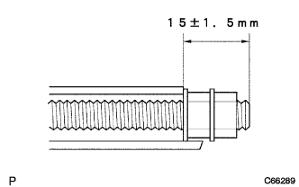

Parking brake control pedal ASSY installation |
| 1. Parking pedal pad installation |
| 2. Parking brake switch Assisted |
With one screw, attach the parking brake switch ASSY.
| 3. Parking brake cable Assisted |
 |
Pass the parking brake cable ASSY No.1 through the parking brake pedal to ensure the claw.
With a clip, fix the parking brake cable assy No.1 to the parking brake pedal.
|  |
Fix the lock nut and adjasting nuts at the position in the figure.
| 4. Parking brake control pedal ASSY installation |
 |
Attach the clip and fix the parking brake pedal ASSY.
Attach the upper bolt.
Attach 2 nuts from the engine room side.
Connect the connector of the parking brake switch asser.
| 5. Parking brake cable ASSY No.1 connection |
 |
Connect the parking brake cable ASSY No.1 to the parking brake interimide lever, attach the clip and fix it.。
Connect the parking brake cable ASSY No.2 and the parking brake cable Assy No.3 to the parking brake equalizer.
With bolts, attach the parking brake cable ASSY No.1 clamp on the floor.
| 6. Wire jacasting nut No.1 Temporary tightening |
 |
Parking brake wire gathing nuts1 and temporarily tighten the rock nut.
| 7. Parking brake pedal stepping adjustment |
reference)| 8. Lonstone sirensa pad SUB-ASSY RR RH installation |
| 9. Floorboard No.1 installation |
Combine the two clips and attach the No. 1 floorboard.
| 10. Lon floor silence pad RH installation |
| 11. Lon floor carpet ASSY FR installation |
| 12. Installation panel finish panel LWR CTR installation |
 |
Attach the instrument cup holder with three screws.
Connect the connector of the power outlet socket.
Combine the eight claws and attach the instrument panel finish panel LWR CTR with two clips <c>.
| 13. Installment panel W/Passenger Airbag ASSY installation |
In the screw <b> two, attach the Hita Tsuji Regista Duct No.1 to the instrument panel W/ Passenger Airbag Assy.

With two screws <b>, install the side deflo -rosulle duct No.1 to the instrument panel W/ Passenger Airbag Assike.
With two screws <b>, attach the Hita Tsugu register duct No.3 to the instrument panel W/ Passenger Airbag ASSY.
With two screws <b>, attach the side -deflo -rosula duct No.2 to the instrument panel W/ Passenger Airbag Assy.
Instrument panel W / Passenger Airbag ASSY The position of the front side of the vehicle, connect the central connector and the clamp, combine the seven claws on the front side, screv <c> or <c> or <D> Instead the instrument panel W / Passenger Airbag Assies with 4 books.
| 14. Instrument panel passenger airbag connector connection |
 |
Connect a connector for the instrument panel passenger airbag ASSY.
| 15. Installation panel finish plate installation |
 |
Combine the four claws, and attach the instrument panel fuinitsu plate with one screw <b>.
| 16. Installation cluster finish panel SUB-ASSY CTR installation |
 |
Combine the 12 claws and attach the instrument cluster fujinitsu panel CTR CTR.
| 17. Installation panel register Assy No.1 Installation |
 |
Combine the five claws and attach the instrument panel register Assistor ASSY No.1.
| 18. Glove Compartment Door Sub-Assessed Installation |
 |
Attach the grab compartment door with two screws <j>.
| 19. Combination meter Assisted |
 |
Connect the connector and press the combination sijon meter ASSY in front of the vehicle to match the clip.
Attach the combination sijon meter ASSY with two screws.
| 20. Installment cluster finish panel No.1 installation |
 |
Push the instrument cluster fuinitsui panel to the front of the vehicle and attach the claws together.
| 21. Front pillar garnish LWR LH installation |
 |
Combine the four claws and attach the front pillar garnish LWR LH.
| 22. Lon pillar garnish LH installation |
 |
Put the claws at the bottom of the garnish first.
Match all clips and attach the front pillar garnish LH.
| 23. Pillar No.1 Garnish LH installation |
Match the claws and attach the pillar No.1 garnitsu.
| 24. Liydoors Opening Trim Weather Strip LH installation |
Combine the paint mark of the Weather Strip (yellow and white, one, one place) and the cut -out portion (arrow part) on the woethstritzy portion on the body side, and attach the rear door opening trimweather strip LH.

| 25. Lonter pillar garnish RH installation |
 |
Put the claws at the bottom of the garnish first.
Match all clips and attach the front pillar garnish RH.
| 26. Lon pillar garnish LWR RH installation |
 |
Match the claws and attach the front pillar garnish LWR RH.
| 27. Side No.1 Trim ASSY RH installation |
 |
Attach the clip and claws and attach the side No.1 trim ASSY.
| 28. Front sheet outa -albtown Assy RH installation (floor anka part) |
In the bolt, attach the front seat Otabelt Assy RH floor anka.
| 29. Lap belt Otanka cover installation |
 |
Combine the claws and attach the wrap belt Otanka cover.
| 30. Rear seat 3 point type belt assigned (floor anka part) |
Tighten the rear seat 3 point type belt ASSY OUT RH (floor anka part) with bolts.
| 31. Front door opening trim Weather strip RH installation |
 |
Combine the paint mark of the Weather Strip (white, one place) and attach the front door opening trimweather stretup RH.
| 32. Cowl side trim board RH installation |
 |
Push the clip in front of the vehicle and attach the cowl side trim board RH.
| 33. Front doorskuff plate RH installation |
 |
The claws at the front and rear ends are used.
Make the claws and attach the front door scuff plate RH.
| 34. Front seat Assisted |
Operate the seat track adjusting handle to slide the front seat ASSY to make it a front mort.
Put the sheet Assies on the vehicle and match the pins on the front seat leg ASSY RH part and the hole on the vehicle side.
Connect the vehicle side wire harness and the seat side wire harness.
Temporarily tighten the rear side of the seat Assy with two bolts.
Operate the seat truck adjusting handle to slide the front seat ASSY to make it a rear mole.
Temporarily tighten the front side of the sheet Assy with two bolts.
Operate the seat track adjusting handle to slide the front seat ASSY to make it a front mort.
Tighten the two bolts on the rear side of the sheet Assing in order of inner → outa.
Operate the seat truck adjusting handle to slide the front seat ASSY to make it a rear mole.
Tighten the two bolts on the front side of the sheet asser in the order of inner → outa.
The claws of the front seat leg cover are adjusted.
| 35. List of cushion Assy installation (rear seat split can be divided) |
Lock the front side of the rear seat cushion Assy is locked by the rear seat cushion lock striker.
Pass the rear seat belt through the rear seat cushion cover and pad back rubber band.
 |
At the bolt, attach the rear seat hinge LH.
Attach a snap ring to the rear seat back hinge RH.
The rear seat hinge RH is inserted into the corner pipe of the rear seat cushion Assy right bracket.
| 36. List of rear seat back ASSY LH installation (rear seat split can be split) |
Attach the rear seat back with two bolts.
 |
Attach two clips.
| 37. Rear seat back Assembly RH installation (rear seat split can be split) |
Attach the rear seat back with two bolts.
Attach two clips.
| 38. Rear seat back hinge SUB-ASSY RH installation (overturned rear seat) |
 |
With a bolt, tighten the rear seat Batsuku hinge RH.
| 39. Rear seat back hinge SUB-ASSY LH installation (overalled rear seat) |
With a bolt, tighten the rear seat Batsuku hinge LH.
| 40. List seat cushion Assy installation (integrated rear seat) |
Rena seat cushion assemble the hook at the rear of the rear seat.
Pass the rear seat belt through the rear seat cushion cover and pad back rubber band.
 |
Rena seat cushion Assy The hook at the front of the front.
| 41. List of rear seat back Assist installation (overall rear seat integrated type) |
Attach the rear seat back associate with two bolts.
 |
Attach two clips.
| 42. Airbag Warnin Grand Point Inspection |
reference